As we said, the model in SunRiZe is changeable so we call the model : “the default model”.
However the default model, that is
vaguely inspired to UML but is NOT UML, is a good starting point to
design firmware and software for small devices efficiently.
In the Main Context toolbar there are two symbols :
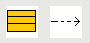
The first is the Module symbol,
the second one is used to determine the Dependencies
among modules.
A Module is the basic unit in the model, and represents a “real” piece of code (in C two pieces of code, .h and .c ).
In the SunRiZe graphics environment a Module is considered a “Primary – Stand-Alone object” that is an object that does not depends from other objects and can contain optionally a sub–context that is the FSM.
From the point of view of the object oriented programming instead you can think to a Module as a unique static instance of a class with the own methods and attributes.
To place a Stand-Alone object, select it from the ToolBar :
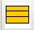
an place it freely into the drawing area, in this case the Main Context .
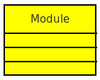
Part of the module code is auto-generated by the module and part must be edited with a simple editor (or an IDE) directly in the source files. When the code is regenerated, SunRiZe will take care to preserve certain pieces of code, using a keywords based technique.
Clicking twice on the module in the drawing area, we can open the Module Editing Dialog Box :
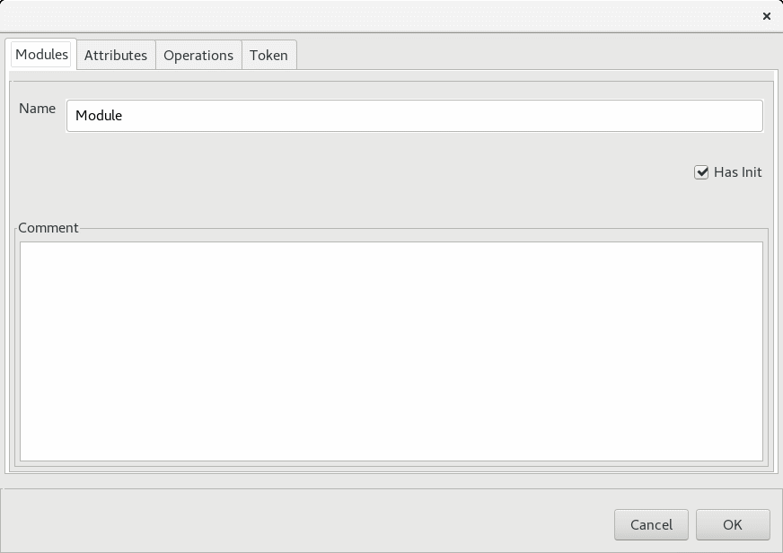 This is a four tabs dialog box, which allows you to define the general layout of the single module, defining :
Despite the basic code generator uses the C language that is not natively object oriented, SunRiZe implements some of the typical characteristics of the object oriented programming, as the overloading, the attribute/operations visibility and the presence of a initializer or constructor.
The Attributes are implemented as global variables : the Private Attributes are defined “static” and the Public Attributes are referenced in the header file.
We can find the same behavior for the Operations that are simple C functions working on the local variables in the modules (remember that all the instances are single).
This kind of implementation does not impact
on the functionality of the model, and at the same time avoid the
usage of the data structures typical of the C++ language and the
related pointers and furthermore, it does not require any kind of
dynamic allocation.
The trans-module Overloading property is introduced for Public Attributes and Operations, because they are always defined and linked as :
<Module Name>_<Attribute / Operation Name>
For example a public operation sum inside the module Calc is always referred as Calc_sum ( ) that is similar to the object oriented call of Calc.sum().
The same function locally in the module where is defined, is then “aliased” as sum( ).
The Tokens instead are not related to the object oriented programming but are inspired to the Petri Net Transitions .
They
are
global counters which can be limited, raised and eventually
enclosed in specific public operations and they are used to
define a specific kind of transitions in the Finite
State Machine.
In SunRiZe a dependency is defined as a “Junction” object, that requires the existence of two standalone (and compatible) objects to be placed in the drawn.
After created two modules, you can select this symbol from in the ToolBar :
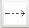
And place it between the Source and the Destination .
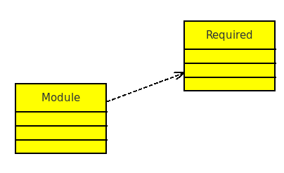 In this way, we are saying that Module depends from Required.
This connection has two immediate effects :
The header file of Required is included into the body file of Module .
The initialization order of the modules can change.
The initialization order of the
modules tries to follow the dependencies schema so that Required will be initialized before Module. This order that is determined by a
DSF algorithm, obviously fails for modules connected with
cyclic dependencies.
With SunRiZe we can create three types of modules :
Free code without an initializer, that are usually used as libraries or independent pieces of code.
Module with an initializer, used to define real objects, for example a specific timer o serial port which must be initialized.
The Finite State Machines , used to implements the algorithmic parts running in non-preemptive multitasking.
In this chapter we discuss the features and the behavior of the Finite State Machines.
Each Module can include a single Finite State Machine (briefly FSM) that is implemented by several attributes and a run function.
To insert a FSM into a Module , we need to keeping selected the module and then press Ins . This command creates/changes the drawing area to the module local context that is the FSM.
The tool-bar also changes to the FSM toolbar.

Showing the objects that can be placed in the FSM context that are
respectively :
States
Transitions
Branches
There is another object that is the Initial State which can’t be placed because it is unique, non-removable and already present in the drawing as a big black spot.
We can build the FSM starting from
this point.
A Finite State Machine is essentially composed by States and Transitions.
States are Standalone Objects and can be freely placed and moved on the drawing area, as likes as modules.
A machine can walk from a state to
another when some kind of Event happens, this is done
by placing a junction between states that is
called Transition :
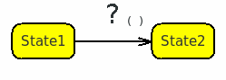
In SunRize we have 3 types of Events :
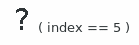
The transition
shots when a particular condition is detected. A condition
is a counter-less situation that is always considered.
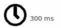
The transition shots after a certain
amount of time from the previous transition.
The transition shots when someone, somewhere , raises the token or calls a proper module method which does the same thing.
When a transition shots, three blocks of codes are executed in
this order :
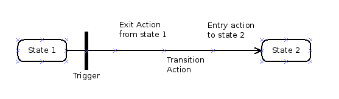
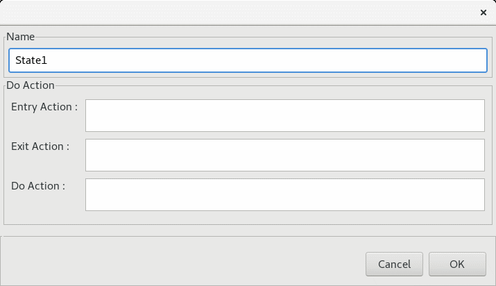
These blocks of code are related to the states and the transition, we can set them by opening with a double click the State Editing Dialog Box
And the Transition Editing Dialog Box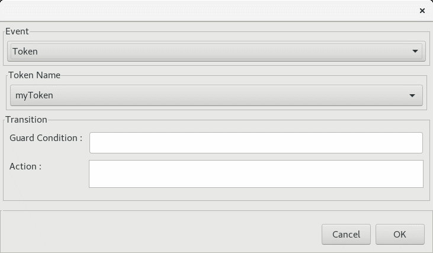
In these dialog boxes we can recognize also a couple of elements
that are :
The Do Action associated to the state that is executed continuously in an open loop while the system is remaining in that states.
The Guard Condition that is strictly related to the Token event and blocks the execution of a transition if the guard is not satisfied.
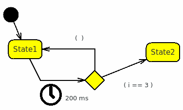 A branch is used to change the destination of a transition upon a specific condition.
In this case for example, after 200ms the transition shots but the destination is State2 only if i==3 , if i!=3 the default branch (without a condition) creates an auto-loop on the State1.